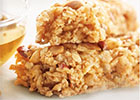
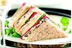

Una persona saludable está radiante por dentro y por fuera. Ejercitemos también nuestro cerebro con este juego de destreza mental. Haz chocar las frutas hasta obtener la manzana de la salud!
Como jugar: presiona las flechas del teclado para mover las frutas. Haz chocar frutas del mismo tipo entre sí y se convertirán en otra. Hazlo hasta obtener la manzana de la salud.
No es casualidad que los chicos se encuentren en tan buena forma, pues cada uno se somete a una dieta especial que incluye alimentos saludables (como vegetales de hoja verde, alimentos orgánicos libres de componentes químicos, pastas integrales y cero alcohol). También se someten a un programa de ejercicios adecuado a su edad y complexión que deben de seguir estrictamente para poder dar shows de tan buena calidad.

Justin Bieber
Este adolecente decidió llevar una dieta vegetariana se enfoca a la alimentación con verduras. Esto incluye frutas, verduras, guisantes y alubias secas, granos, semillas y nueces. Las personas que siguen dietas vegetarianas pueden obtener todos los nutrientes que necesitan. Sin embargo, deben comer una amplia variedad de alimentos para cubrir sus necesidades nutricionales. Los nutrientes vegetarianos deben enfocarse en incluir proteínas, hierro, calcio, zinc y vitamina B12.

Miley Cyrus
Esta estrella sigue una dieta libre de gluten, es decir, no consumen avena, trigo, centeno y cebada, o cualquier producto que contenga trazas de ella.
Ya de por sí, existen personas con enfermedad celíaca teniendo que eliminar el gluten de la dieta, pero en cambio, existen otras personas que realizan esto con la finalidad de bajar de peso. En este caso, Miley comentó en una entrevista que tiene alergia al gluten y a la lactosa.